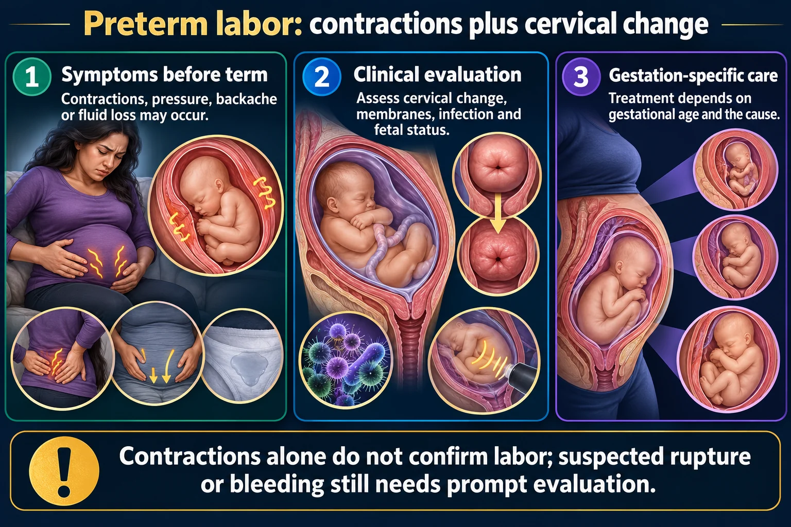

Before 37 weeks. What stops it, what matures the lungs, and the two drugs with very different jobs.

The tocolytic is not treating the labor. It exists to create the window the steroid needs.
Contractions alone do not confirm labor; suspected rupture or bleeding still needs prompt evaluation.
Symptoms before term
Contractions, pressure, backache or fluid loss may occur.
Clinical evaluation
Assess cervical change, membranes, infection and fetal status.
Gestation-specific care
Treatment depends on gestational age and the cause.
Assessment
Timing, fetal monitoring and appropriate examinations guide diagnosis.
Treatments
Corticosteroids, tocolysis, magnesium or antibiotics have specific indications.
Teaching
Explain symptoms that require reassessment and the individualized follow-up plan.
Regular contractions with cervical change before 37 weeks. Contractions alone are not preterm labor — the cervix has to be changing.
| Risk factor | Note |
|---|---|
| Previous preterm birth | The strongest single predictor |
| Infection | UTI, bacterial vaginosis, chorioamnionitis |
| Multiple gestation | Overdistension |
| Short cervix, previous cervical surgery | Measured on ultrasound |
| Smoking, substance use, poor nutrition | Modifiable |
| Preeclampsia, polyhydramnios, PROM |
Untreated urinary tract infection is a preventable cause. That is why every pregnant woman with dysuria gets treated promptly, and why asymptomatic bacteriuria is screened for and treated in pregnancy but not otherwise.
Teach every pregnant woman to report:
Women often dismiss backache and pressure as normal pregnancy discomfort. Teaching them the difference is what gets them in early enough for steroids to work.
One buys time. The other uses it.
| Tocolytics | Corticosteroids | |
|---|---|---|
| Purpose | Delay birth for about 48 hours | Mature the fetal lungs |
| Examples | Nifedipine, indomethacin, terbutaline | Betamethasone, dexamethasone |
| Why 48 hours? | That is how long the steroids need to work. The tocolytic exists to create the window | |
In preterm labor before about 32 weeks, magnesium is given for fetal neuroprotection — it reduces the risk of cerebral palsy.
Same drug, same monitoring (reflexes first, respirations, urine output, calcium gluconate at the bedside) — but a different purpose from its use in preeclampsia, where it prevents seizures.
Tocolysis is contraindicated when continuing the pregnancy is more dangerous than delivering:
If there is infection, delivery is the treatment. Stopping labor would keep the baby in an infected uterus.